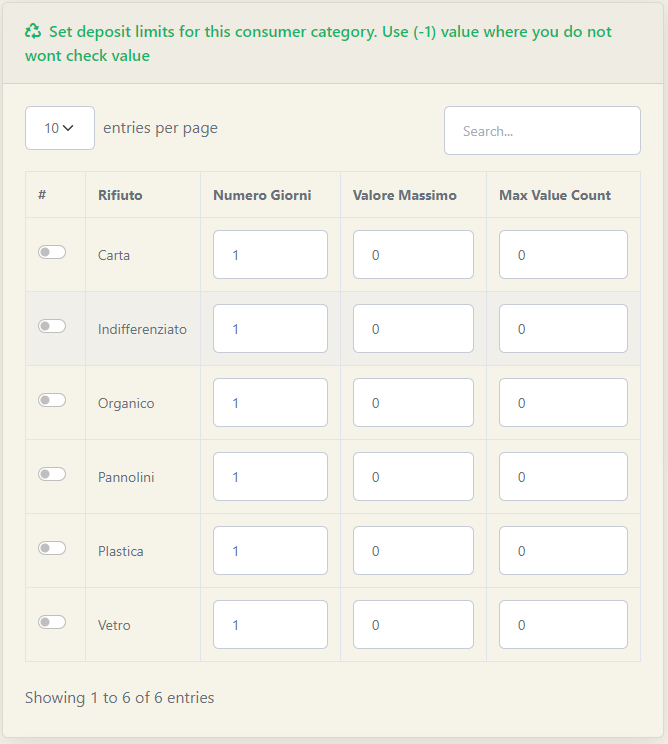

Come detto in precedenza, a partire dalle storing categories si diramano le diverse Categorie Utenza. Una categoria utenza rappresenta un gruppo all'interno del quale inserire utenti che condividono uno stesso set di regole. Recandoci nell'apposita sezione presente sulla Sidebar, Categorie Utenza, ci verrà presentata una schermata di riepilogo molto simile a quella vista precedentemente.
Anche in questo caso sarà presente la possibilità di aggiungere una nuova Categoria Utenza semplicemente cliccando sul tasto verde + Add New. In questo caso i campi da compilare saranno:
Le categorie utenze sono molto utili per definire regole che valgono per un determinato gruppo di utenti, come per esempio limiti al conferimento, kit di sacchetti a disposizione e limiti all'erogazione di sacchetti a disposizione.
Possiamo vedere questi tre concetti espressi nelle tre tabelle nella parte inferiore della pagina:

Nella prima tabella (Foto 1) l'amministratore potrà impostare eventuali limiti al conferimento. Tali limiti sono espressi su ogni bocchetta, per ogni categoria di rifiuto. Supponendo l'esempio di un limite annuale di 5 conferimenti per ogni categoria di rifiuto, la tabella dovrebbe essere compilata nel seguente modo:
Nella seconda tabella (Foto 2), nel caso in cui nel proprio comune siano presenti distributori di sacchetti, l'amministratore può impostare quali kit verranno forniti a quella data categoria dalla macchina. Nella colonna # sarà possibile indicare se il rotolo di sacchetti di quella categoria sarà fornito o meno; nelle altre due colonne avremo la possibilità di indicare se il rotolo verrà fornito dalla macchina a pagamento e quale sarà il suo prezzo.
Nell'ultima tabella (Foto 3), sempre nel caso in cui nel proprio comune siano presenti distributori di sacchetti, l'amministratore potrà, analogamente a quanto spiegato per i limiti al conferimento (Vedi Tabella 1), impostare dei limiti al numero di rotoli di sacchetti erogati dalla macchina.
Terminata l'impostazione delle eventuali preferenze sui limiti di conferimento, si potrà registrare la nuova categoria di utenza semplicemente cliccando sul tasto blu in fondo alla pagina +Registra.